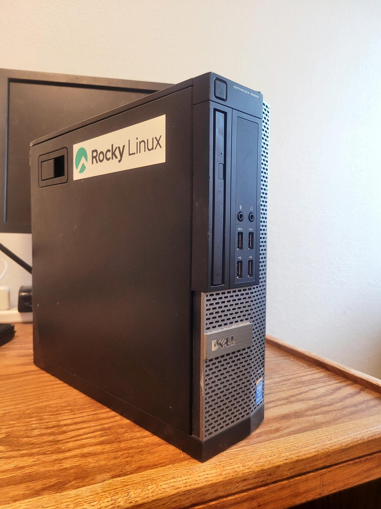
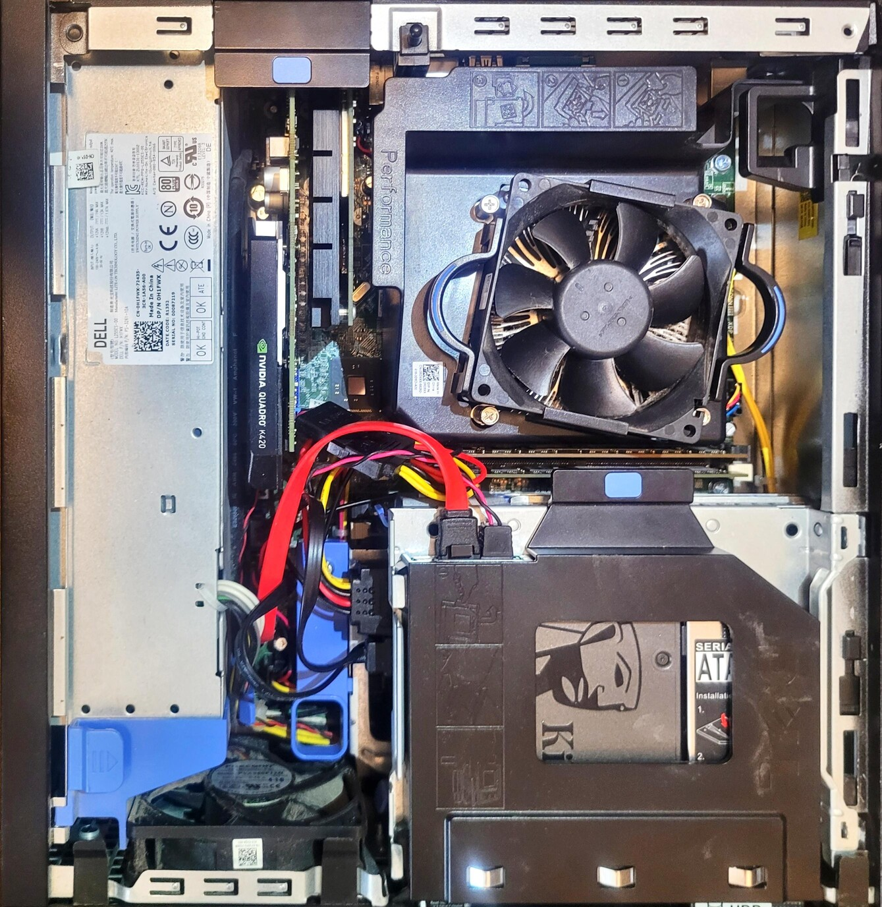

Network Attatched Storage
I have tons of computers and it is often difficult to keep track of what files are where and then you end up with tons of different versions of the same files and so much wasted space. I decided to Make a file server to simplify the distribution of my files.
I had a Dell OptiPlex 9020 SFF kicking around that was just the right size for the space that I had available. I put 4 solid state drives into this machine. The first drive – a 245gb sata SSD – would become the boot drive for Rocky Linux 9. The remaining drives would be for file storage. I added 2 500gb crucial SSD’s and put them in a raid 1 array – esentialy they are identical copies of each other so that if one fails, the other will still have all the data. The final drive was a 128gb drive that I use to store files that I need fast access too but don’t necessarily want redundancy for.
For the processor, I went with an Intel Core i5 4570. I had this kicking around and it seemed to be a reasonable middle of the road choice for a box that would be mostly serving small files and not doing anything intense.
For ram, I added 20gb of 1600mhz ddr3 that I also had lying around. This was initially overkill, but since discovering docker and virtualization, it is a bit of a bottleneck on what I can do with the system.
